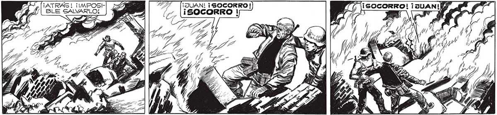
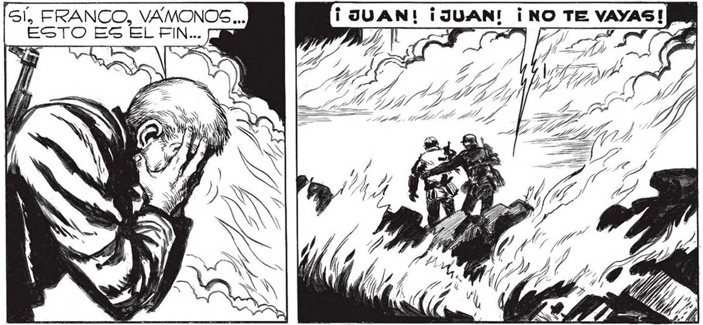
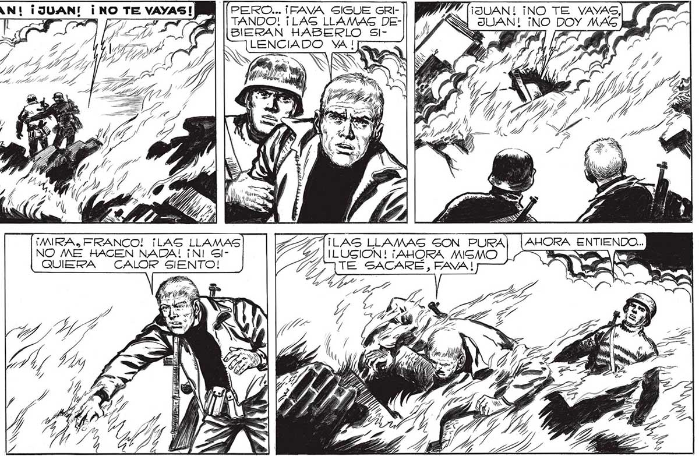

¡ATRAS ! ¡IMPOSH! BLE SALVARLO! Gl, FRANCO, VAÁMONOS ... ESTO Es EL FIN... AA AE AA ESTAS LLAMAS NO DEBEN a ml SER TAN MORTALES CO- MW ER MO O TAME $ NS Ú (MIRA, FRANCO! ¡LAS LLAMAS NO ME HACEN NADA! ¡NI GlQUIERA CALOR SIENTO! 201 = 4 Ñ í = po A 5 ' d IZ : > $ EY $ , 7 ? y y a Me o E Y ) AS DE NS h Y 10 ÉS NU y 2 ES GIA cd ly / á SE . Ñ ) A y al A 4 A =y on a 7 E j Í/ 4 7 ll Sl 38 S 7 Yi s SS Fi 4D Y VI 4 NS / 4 ÓN ; y y ANS » A Í NE EN ES j y á % S - . ¡JUAN! ¡NO TE VAYAS] Pf NL SUAN! ¡NO DOY MAS Jal Y 1! Js b | PERO... ¡FAVA SIGUE GRITANDO! ¡LAS LLAMAS DEBIERAN HABERLO SIiALENCIADO YA ! [G A, ye A hi o < PEA Y Ss Sí a | po ¡LAG LLAMAS GON PURA ILUSION! ¡AHORA MISMO TE SACARÉ, FAVA !


